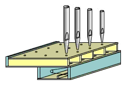
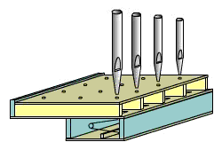

 
U ventilové vzdušnice je zpùsob pøidìlování vzduchu píšalám obdobnı, jako u zásuvkové vzdušnice. Klapkové ventily vpouštìjí vzduch do pøíènıch kanálù – tónovıch kancel, které jej rozvedou pod píšaly jednotlivıch tónù: |
Rozmístìní píšal tónù (v pøíèném smìru) a rejstøíkù
(v podélném smìru) je rovnì stejné, jako u ostatních vzdušnic: |
 |
To, co tento typ vzdušnice odlišuje od ostatních
konstrukcí s tónovımi kancelami je zpùsob pøidìlování vzduchu píšalám
jednotlivıch rejstøíkù (podélné ovládání). U zásuvkovıch vzdušnic plní
tuto funkci zásuvka, u ventilové vzdušnice je to druhá øada ventilù. Princip
jejich práce nastiòuje následující animace øezu jednou tónovou kancelou
s trojicí píšal (tøí rejstøíkù): |
Kadá píšala má pøívod vzduchu kanálkem z tónové kancely ovládán pomocí membránového nebo míškového ventilu. Všechny membrány, patøící píšalám jednoho hlasu (po celé délce vzdušnice) jsou pøipevnìny ke spoleènému kanálku (na animaci jsou tøi kanálky pro tøi rejstøíky). Ovládáním tlaku vzduchu v tomto kanálku pomocí rejstøíkového ventilu øídíme otevírání (vypuštìním vzduchu z kanálku) èi zavírání (naplnìním kanálku vzduchem) ventilu.
|
Nafoukneme-li míšek stlaèenım vzduchem z registraèního kanálku, dolní krouek se pøitiskne k otvoru z kancely a brání prùchodu vzduchu k píšale. Rejstøík je tedy vypnutı, jeho píšaly nezazní ani po naplnìní tónové kancely vzduchem po stisknutí kláves (obrázek napravo).
|
Konstrukce ventilù (pod píšalami) mùe bıt rùzná,
nìkteøí varhanáøi pouívají místo tobolek (kruhovıch míškù) obdobu klínovıch
míškù – viz následující obrázky. |
Èinnost této varianty vzdušnice je v principu stejná
jako v pøedešlém pøípadì, ventil (tìsnící krouek) pøipevnìnı k pohyblivé
èásti míšku ovládá pøívod vzduchu k píšale v závislosti na tlaku v registraèním
kanálku. |
 |
Míšky jsou opìt pøipevnìny na spoleèném pøívodu (kanálku),
jedinı rozdíl je ve smìru jejich ovládání (uzavírají otvor zespodu ve
smìru tlaku, pøedchozí konstrukce proti tlaku). Další konstrukèní variantou je pouití èistì membránového ventilu: |

Èinnost tohoto typu ventilu je podrobnì popsána v
kapitole o komponentech pneumatické
traktury. Není-li
nad membránou (na obrázku jsou montovány svisle, take vedle membrány
nalevo) stlaèenı vzduch, pøetlak vzduchu z kancely pøekoná její prunost
a projde pøes kanálky v bloèku a k píšale. Naplníme-li prostor nad membránou
stlaèenım vzduchem (vypneme pøíslušnı rejstøík), membrána se pøitiskne
k otvorùm v bloèku a vzduch se k píšale nedostane. (obrázek napravo). |
 Zapneme-li
rejstøík, vypustíme tím z prostoru nad membránou vzduch a zanikne tak
síla, která ji tiskla k otvorùm pod ní. Po stisknutí klávesy vzduch z
kancely nafoukne membrány zespodu (na obrázku díky svislé montái zprava)
a projde volnì a do píšaly. Na obrázku nalevo je zachycen právì tento
okamik, rejstøík nalevo má v komùrce nad membránou stále stlaèenı vzduch,
take zùstává vypnutı, zbıvající dva jsou zapnuté a zní. Zapneme-li
rejstøík, vypustíme tím z prostoru nad membránou vzduch a zanikne tak
síla, která ji tiskla k otvorùm pod ní. Po stisknutí klávesy vzduch z
kancely nafoukne membrány zespodu (na obrázku díky svislé montái zprava)
a projde volnì a do píšaly. Na obrázku nalevo je zachycen právì tento
okamik, rejstøík nalevo má v komùrce nad membránou stále stlaèenı vzduch,
take zùstává vypnutı, zbıvající dva jsou zapnuté a zní. |
Na souvisejících stránkách najdete popis dalších konstrukèních variant vzdušnic s tónovımi kancelami. Jsou to zásuvková vzdušnice, a bodcová vzdušnice. Popis pak pokraèuje další velkou skupinou vzdušnic s rejstøíkovımi kancelami - kuelková vzdušnice, membránová vzdušnice a vzdušnice se svislımi ventily a skøíòovou vzdušnicí (Unit). |
Poznámka: Tato stránka je souèástí Anatomie varhan ®, © Ing. Petr Bernat. Všechny animace © Konrad Zacharski
 Samotnı
ventil, pouívanı u této vzdušnice má nejèastìji podobu tobolkového
míšku – prstence (polštáøku, taštièky) z mìkké kùe, kterı je vlepen
mezi dvojici tuhıch kroukù (ze døeva èi tvrzeného papíru). Uvnitø míšku
je vìtšinou pøídavná pruinka, která zlepšuje tìsnící vlastnosti jím
tvoøeného ventilu.
Samotnı
ventil, pouívanı u této vzdušnice má nejèastìji podobu tobolkového
míšku – prstence (polštáøku, taštièky) z mìkké kùe, kterı je vlepen
mezi dvojici tuhıch kroukù (ze døeva èi tvrzeného papíru). Uvnitø míšku
je vìtšinou pøídavná pruinka, která zlepšuje tìsnící vlastnosti jím
tvoøeného ventilu.  Po
vypuštìní vzduchu z registraèního kanálku (zapnutím rejstøíku na hracím
stole, které se pøenese trakturou a na ventil, kterı se postará o pøíslušné
øízení tlaku vzduchu v kanálku) míšky splasknou. Pokud se v tónové kancele
objeví stlaèenı vzduch (je stisknuta pøíslušná klávesa), jeho pøetlak
pøekoná snadno zbytkovou sílu (pruinky a vlastní váhy krouku míšku)
a volnì projde k píšale.
Po
vypuštìní vzduchu z registraèního kanálku (zapnutím rejstøíku na hracím
stole, které se pøenese trakturou a na ventil, kterı se postará o pøíslušné
øízení tlaku vzduchu v kanálku) míšky splasknou. Pokud se v tónové kancele
objeví stlaèenı vzduch (je stisknuta pøíslušná klávesa), jeho pøetlak
pøekoná snadno zbytkovou sílu (pruinky a vlastní váhy krouku míšku)
a volnì projde k píšale.